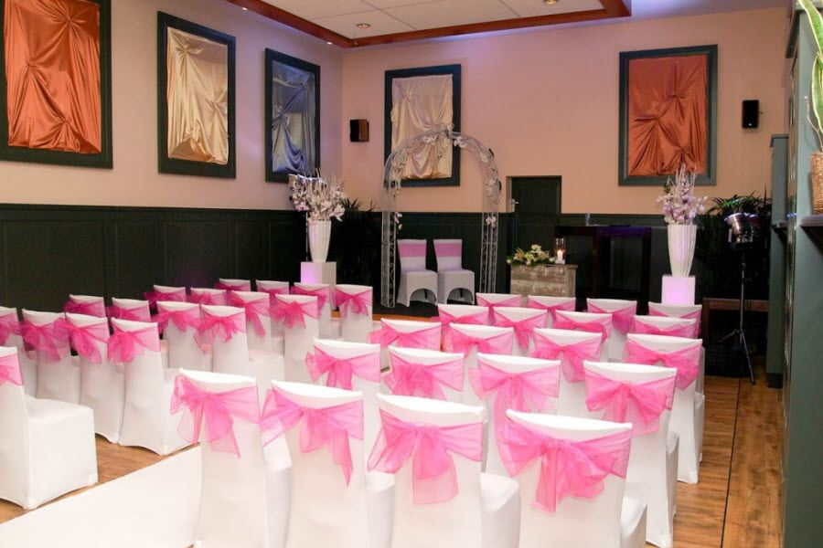

Trouwen
Het is mogelijk je burgerlijk huwelijk te voltrekken in De Meester: we zijn als Huis der Gemeente een officiële trouwlocatie. Plechtigheid en feest op dezelfde locatie, dat is wel zo gemakkelijk! Het café kan dienen als sfeervol decor voor kleine gezelschappen, de zaal biedt mogelijkheden voor grotere gezelschappen.
Bruidstaart en ijsbruidstaart